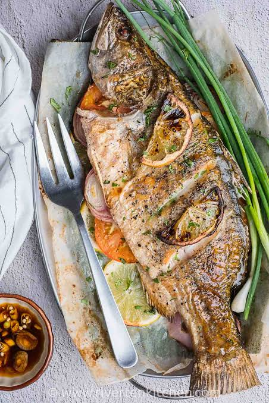
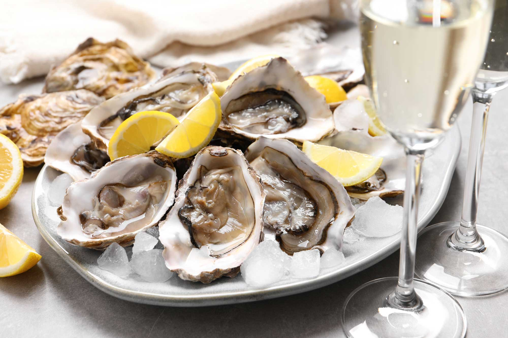
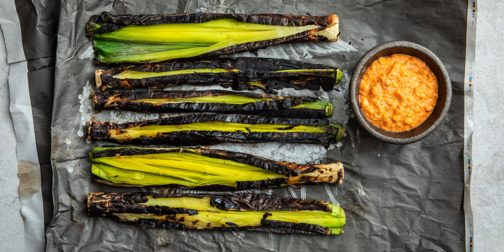
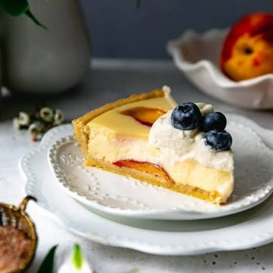

Whole grilled plaice
£26Brown shrimp butter, capers and charred lemon. Off the bone at the table if you'd like.
Seafood & wood fire on Whitstable harbour
A 46-cover harbourside restaurant serving Seasalter oysters, day-boat fish and Kentish produce, cooked simply over an open oak fire.
Checking opening hours…

Oysters from the Seasalter beds, 2 miles west Picked at low tide
What lands on the harbour wall decides what we cook. Plaice, bream and squid from the Whitstable day boats, lamb from Romney Marsh, cheese and fruit from farms across Kent.
Native oysters from September to April, rock oysters all year. When the tide is wrong, there are none.
Almost everything passes over our open fire: whole fish, hispi cabbage, even the leeks for the romesco.
Our fish, meat, dairy and most of our vegetables come from within 30 miles of the harbour.
On the menu this week
The menu changes with the catch, but these three rarely leave it.

Brown shrimp butter, capers and charred lemon. Off the bone at the table if you'd like.

Hazelnut romesco and aged Kentish cheddar. Our most-ordered vegetarian plate.

Made with honey from hives on the Blean, served with a spoon of crème fraîche.
Five minutes' walk from Whitstable station. Pay-and-display parking on the harbour.